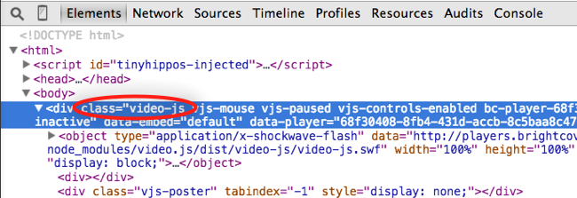
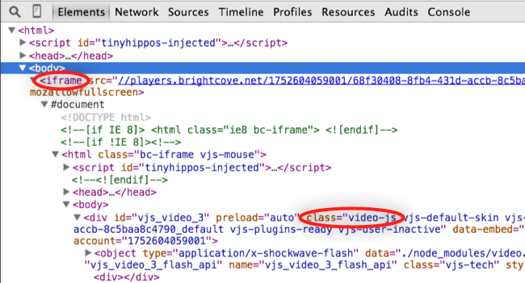
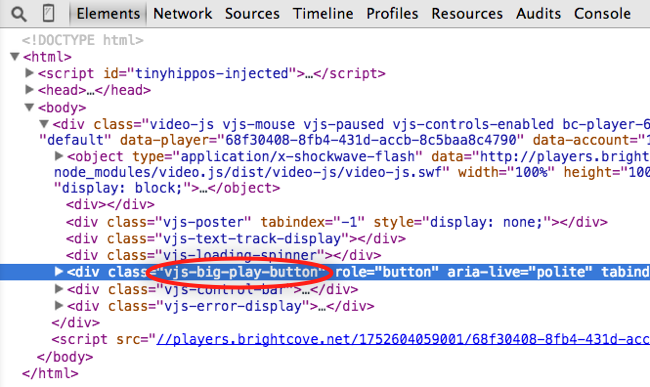
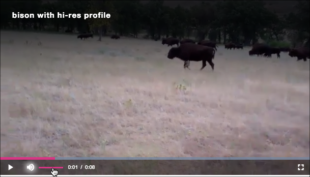

Customize Player Appearance
This topic is a primer on customizing the appearance of the new player. The content uses Chrome's development tools, but all modern browsers have equivalent functionality. For a brief introduction to using development tools in different browsers see the Debugging Basics document.
Player
You can alter the appearance of the player, but you must first have a way to address it. To see this, browse an HTML page with the player embed_in_page code inserted. In the Elements section of the Development Tools locate the first <div> and you will see it has a class with the value video-js assigned, among others.

Once you know this, you can use styles to alter the player itself. For instance, to change the size of the player you can use this style:
iframe player
If you are using the iframe implementation of the player the situation is different. You will still see the player with the video-js class, but it will be, of course, inside the iframe.

The styles you create will still work with the player in the iframe, but a CSS file will need to be created and associated with the player, as shown in the Customize a player section of the Quick Start to Player Management.
If you do wish to customize the iframe itself, you can do this by adding a class attribute to the iframe element (line 27). In this case, the class value is videoFrame. Then use a <style> tag to modify as wished. In the example below the width and height are altered.
Play button
If you wish to alter the appearance of the play button you first need to know how to address it. In Chrome, be sure the Development Tools are open and then right click on the button. From the selections that appear choose Inspect Element.

In the Elements section of the Development Tools, you will see the HTML code that corresponds to the button element.

From the highlighted code above, you can see the class assigned to the button is vjs-big-play-button. The play button's color (to match the tiger) and opacity will be changed with these styles:
You would think that this approach would work, but it does not. When working with CSS you need to be aware of property specificity. This refers to how the browser determines which property values get applied to an element based on their relevance.
The next section will review options for working with Specificity. For now, adding an id attribute to the div element for the player code will solve the problem.
Then, you can reference the player's big play button in the CSS as follows:
Here is the result of changing the button from dark grey to orange:
You would think that this approach would work, but it does not. When working with CSS you need to be aware of property specificity. This refers to how the browser determines which property values get applied to an element based on their relevance. For details about this concept, review the Specificity article.
Progress & volume
The last appearance customization we'll look at in this doc will be to change the color of the progress and volume indicators. The default color for both is fuchsia, as shown here:

The challenge here is to find the class names for the elements. Using the same technique as above, right-clicking on an element choosing Inspect Element, you can get to the whole progress indicator, then drilling down you will see the vjs-play-progress class.
In the Chrome Elements panel, mouse over the div element with a class name of vjs-play-progress to see the following in the player:

A tool in Chrome is helpful when checking for the volume level element. Note that you only see the volume level when you mouse-over (hover) the volume button. To have the volume level shown when inspecting and finding the correct element, perform these steps:
- Right-click on the volume button and inspect it
- Click the Toggle Element Button (highlighted in blue below) in the top-right of the Styles section
- Check the :hover box (highlighted in red in the Styles section) to simulate the mouse over while you are inspecting the elements
- Drill down until you find the volume level element (highlighted in red in the Elements section)

Now the background-color of both of these elements needs to be styled. You want them the same color as the button, so alter your styles as shown here:
Notice that we are prefixing each class with the id of the player's div element. This provides relevance for the class changes with regard to Specificity. This will be talked about in the next section.
The results appear as follows:
This primer has given you a quick look at styling the player. As you have seen, the approach is to find the class name that corresponds to the element you wish to change, then style it. Remember as mentioned in the iframe section of this document, if you are using the iframe player, you must put the styles in a file then use a curl statement to associate the styles with the player.
Remember that it is a best practice to add the customizations to your player configuration so they can be optimized and travel along with your player wherever it's embedded.